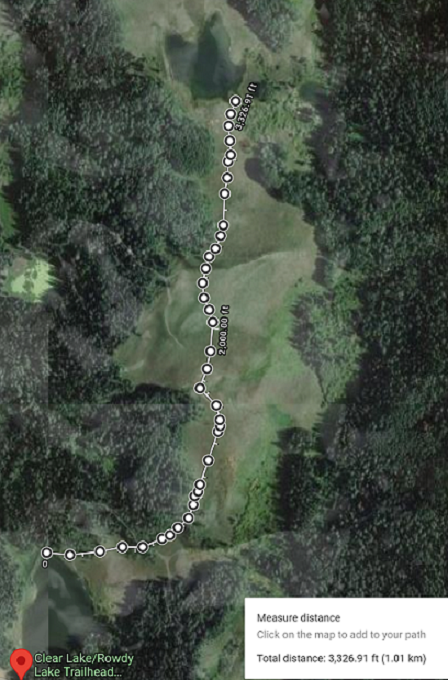

|  | Crystal Lake |
Crystal Lake is a short hike from Rowdy just over half a mile, with
gear
only takes most folks 20 to 30 minutes to complete. A great
little lake to
fish with some sizable Mutcut within. During the early
season the water has
good clearity. But as the summer progress along,
weeds can grow to the
surface of the lake.